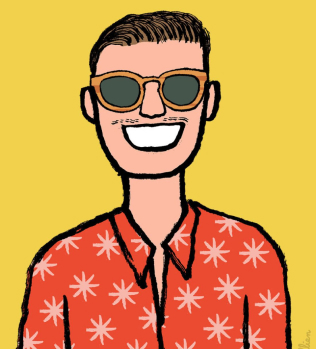
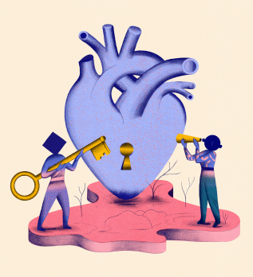
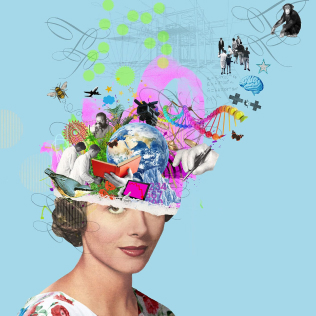
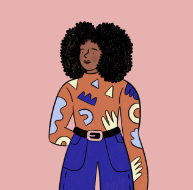
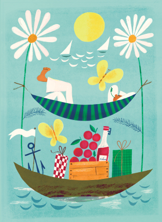
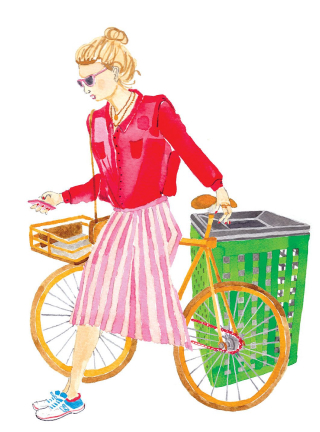
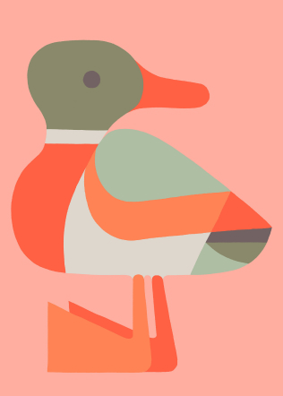

Viaggio nell'illustrazione contemporane
La selezione degli artisti per la mostra "Visioni Illustrate" è stata un processo meticoloso e ispirato, volto a rappresentare la vasta gamma di stili e voci nell'illustrazione contemporanea.
Un comitato di esperti ha valutato centinaia di candidature provenienti da tutto il mondo, con l'obiettivo di scegliere opere che non solo dimostrassero eccellenza tecnica, ma anche originalità concettuale e capacità di comunicare temi profondi o storie coinvolgenti.
L'attenzione è stata rivolta alla diversità di tecniche, dalla tradizionale alla digitale, e alla varietà di espressioni culturali, assicurando che la mostra offrisse uno spettro completo delle tendenze attuali e delle innovazioni nell'arte dell'illustrazione.
Artisti



Opere artisti: Jean Jullien, Icinori, Paul Blow


Opere artisti: Michelle Thompson, Martina Paukova, Hattie Clark



Opere artisti: Sanna Mander, Emily Robertson, Adrian Johnson